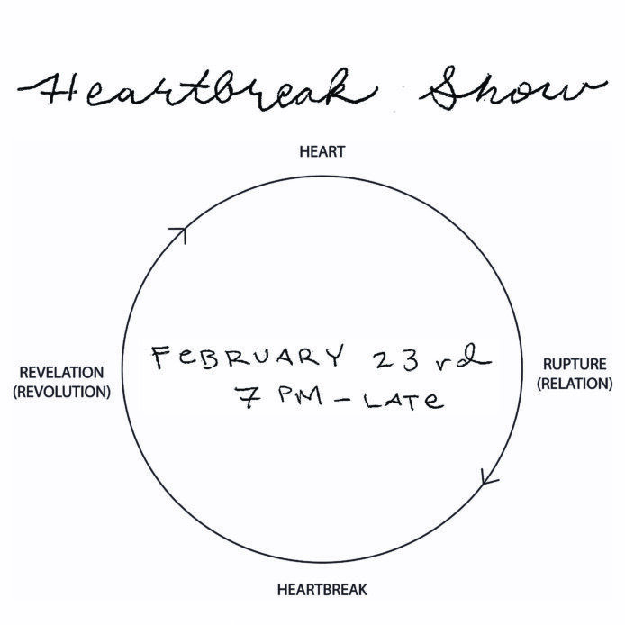

Heartbreak Show
Monday, February 23rd 2026
Starting at 7 pm, please join me in experiencing Heartbreak.
Heartbreak is a breaking of time; it is nontime. It holds every previous Heartbreak, and every future Heartbreak. A Heartbreak is rupture, and revelation.
All Heartbreaks are when a given future is betrayed. We have been Heartbroken by institutions, friends, lovers, guys in charge, family members, and ourselves.
And though we are privately Heartbroken, we also have the same killers, the same lovers, and the same heart.
Curated by:
Arden Allman @garden.of.arden
Featuring work from: